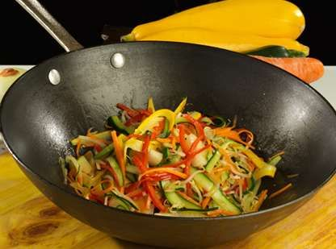

12 Recetas de arroz deliciosas y fáciles de preparar - Recetinas
- Las mejores 98 ideas de Almuerzos deliciosos en 2021 .
- 19 recetas fáciles de almuerzos saludables para no subir de .
- 12 Recetas de arroz deliciosas y fáciles de preparar - Recetinas
- 100 ideas de Almuerzos | comida, recetas de comida, recetas .
- Recetas de almuerzos deliciosos | Alpina Colombia
- Almuerzos Saludables: Rápidos, Fáciles, Caseros y Ricos
Hacer tiempo un saludable puede ayudarnos a llevar mejor el día . PUERROS VINAGRETA . - 20 ALMUERZOS FACILES Y RAPIDOS de hacer en casa
- 30 recetas de pollo fáciles que siempre salen bien - El Español
- Recetas para Almuerzos | Tastemade
- 15 recetas fáciles con huevo - Kiwilimón

Recetinas
Recetas Aperitivos Arroces Bocadillos Carnes Cócteles Desayunos Ensaladas Hamburguesas Legumbres Licuados Panes Pasta Patatas Pescados y Mariscos Pizzas Postres Sopas y Cremas Tortillas y Huevos Verduras Recomendaciones Internacional Cocina Americana Cocina Colombiana Cocina Cubana Cocina Española Cocina Francesa Cocina Hindú Cocina Inglesa Cocina Italiana Cocina Marroquí Cocina Mexicana Cocina Oriental Cocina Panameña Cocina Peruana Cocina Rusa Cocina Venezolana Imprescindibles Niños Trucos de Cocina / Inicio / Recetas / Arroces / 12 Recetas de arroz deliciosas y fáciles de preparar12 Recetas de arroz deliciosas y fáciles de preparar
Índice de Contenidos mostrar 1 Arroz con pollo y verduras 2 Arroz marinero 3 Arroz negro 4 Arroz tres delicias 5 Arroz con pollo 6 Arroz con camarones 7 Arroz chaufa 8 Arroz frito con gambas 9 Arroz a la mexicana 10 Arroz a la naranja 11 Arroz con berenjenas 12 Arroz salteadoEl arroz es uno de los alimentos más utilizados en todo el mundo. Es un producto económico, ideal para preparar con carnes, verduras o pescados y que además aporta grandes beneficios a nuestro organismo.
Seguidamente te muestro unas cuantas recetas de cocina con arroz , todas ellas muy ricas y sencillas de hacer.
Arroz con pollo y verduras
Pechuga de pollo, zanahorias, brócoli, pimiento rojo, cebolla y guisantes, son algunos de los ingredientes que utilizaremos para hacer este delicioso y completo plato de arroz.
Ver recetaArroz marinero
Un arroz con sabor a mar que tendremos listo en apenas 25 minutos. Solo tienes que elegir el marisco que prefieres utilizar según tus gustos y seguir los sencillos pasos que te muestro.
Ver recetaArroz negro
Un arroz de sabor intenso y muy peculiar, el cual vamos a preparar con cebolleta, pimiento verde, langostinos y calamares entre otros ingredientes. Todos ellos para dar lugar a un auténtico manjar. No te lo pierdas!!
Ver recetaArroz tres delicias
Uno de los arroces más populares mundialmente conocido. De origen oriental, este plato lo podemos encontrar en todos los restaurantes chinos del mundo. Ahora puedes aprender cómo se prepara el arroz tres delicias en pocos pasos y muy sencillos.
Ver recetaArroz con pollo
Sabroso arroz que se sitúa como uno de los más seleccionados por el público, siendo económico y muy rápido de preparar. Descubre cómo se hace un arroz con pollo con el que sorprenderás a todos los comensales.
Ver recetaArroz con camarones
En un tiempo aproximado de 40 minutos puedes tener preparado y listo para servir, un rico arroz con camarones que seguro, sorprenderá a todos tus invitados.
Ver recetaArroz chaufa
El arroz chaufa es muy popular en la gastronomía peruana y se prepara con otros ingredientes como el pollo, huevos, pimiento, cebolletas y salchicha fresca. El resultado es un arroz muy sabroso ideal para la comida del día.
Ver recetaArroz frito con gambas
Descubre cómo hacer una arroz frito con gambas , un plato muy similar al arroz tres delicias, siendo otra variante que podemos encontrar en cualquier restaurante oriental.
Ver recetaArroz a la mexicana
El arroz rojo o arroz a la mexicana es un arroz que se prepara con tomates, ajo, zanahoria, cebolla, guisantes y chile entre otros. Es de sabor muy potente y está indicado para comer solo o como acompañamiento de carnes y pescados.
Ver recetaArroz a la naranja
Si te gustan los sabores agridulces, este arroz a la naranja te va a encantar. Una receta muy peculiar que vamos a preparar con ingredientes como naranja, cebolla, ajo y queso parmesano. Sin duda un gran manjar!!
Ver recetaArroz con berenjenas
Ya sabemos que la berenjena es un alimento muy utilizado y que además podemos incluirlo en prácticamente la mayoría de recetas. En esta ocasión será junto con el arroz, uno de los ingredientes principales de este delicioso plato.
Ver recetaArroz salteado
En algo más de media hora puedes tener listo este plato de arroz salteado. En esta ocasión lo vamos a hacer al estilo oriental, incluyendo ingredientes como camarones, guisantes, maíz, puerro, zanahoria y trozos de carne de ternera. Sin duda, uno de los mejores arroces que puedes probar.
Ver recetaY hasta aquí nuestra selección de los mejores arroces de hoy. Espero que disfrutes cocinando estas ricas recetas con arroz y no olvides compartirlas con tus familiares y amigos.
Compartir 46K Pin 12 WhatsApp 46K CompartirNota: 4,73/5 (11 votos)
Valora esta receta
Recetas Relacionadas
Arroz con bacalao 10 Recetas de arroz fáciles y rápidas Arroz con salchichasEtiquetado: Arroz Categoría: Arroces , Recomendaciones
Comentarios de los usuarios
Janeth dice
5 febrero, 2020 a las 11:49 pm
Quisiera ver la receta de arroz de la primera foto si es posible veo verduras y carne pero quisiera saber los demas ingredientes muchas gracias
ResponderLuis dice
6 febrero, 2020 a las 10:06 am
Hola Janeth, la fotografía de portada es una arróz con carne de ternera. Para hacerlo, tienes que cocer en abundante agua con una pizca de sal el arroz con zanahoria troceada y con unas uvas pasas, escurrir y reservar.
Luego haces un sofrito en una sartén con pimiento rojo, cebolla y ajo cortaditos en pequeño. Añades unos trozos de carne de ternera y cocinar hasta que la carne esté en su punto.
Añades el arroz cocido, salpimentar al gusto y remover hasta que todos los ingredientes queden perfectamente integrados.
Deja una respuesta Cancelar la respuesta
Últimas Recetas de Cocina
Ribollita Tarta de queso vasca Cordero al curry Salchichas a la mostaza Hamburguesas rellenas de verduras y huevo Tarta sencilla de café y chocolate 12 Recetas de cenas rápidas y saludables Poke bowl de langostinosSuscripción a Recetinas
¿Quieres recibir cada semana las nuevas recetas de cocina en tu email?
Suscríbete
Recetas por categoría
Índice de recetas Aperitivos Arroces Bocadillos Carnes Cócteles Ensaladas Hamburguesas Legumbres Licuados Panes Pasta Patatas Pescados y Mariscos Pizzas Postres Sopas y Cremas Tortillas y Huevos VerdurasNuestras recetas más vistas
Milanesas de jamón y queso Garbanzos con espinacas y gambas Crema chantilly casera Papas al ajo y limón Brochetas de pollo con miel Croquetas de calabacín Canelones fríos de jamón cocidoRecetas económicas
Ensaladilla rusa Lentejas con verduras Coca de yogur Tallarines con crema de leche Salchichas a la cerveza con patatas Arroz con pollo Bolitas de patataSelección especial de recetas
12 Recetas de arroz deliciosas y fáciles de preparar 8 recetas fáciles para hacer tortilla 10 Recetas de ensalada que se pueden convertir en tus preferidas 40 Recetas de postres caseros 12 Recetas de espaguetis que deberías saber hacerCopyright © 2021 · Recetinas · ¿Quienes somos? · Términos de uso · Política de cookies
